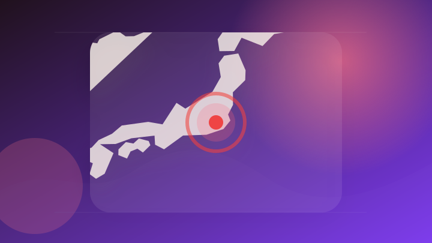
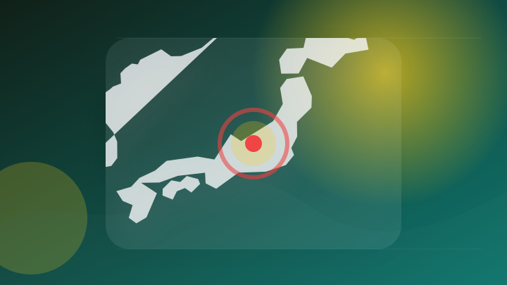
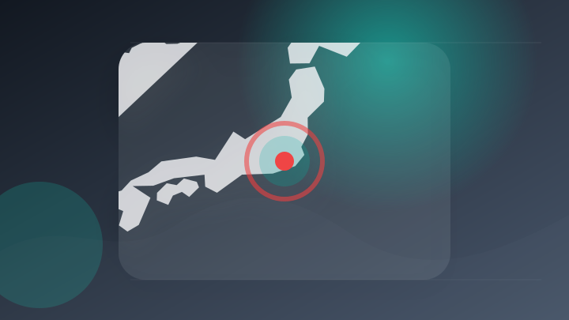
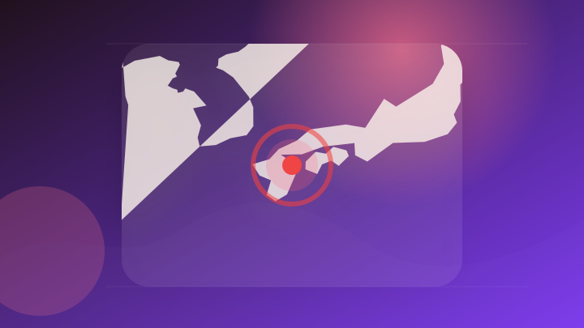
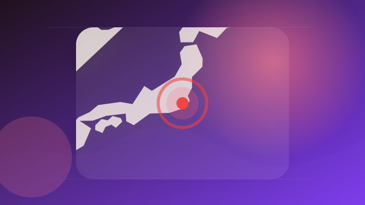
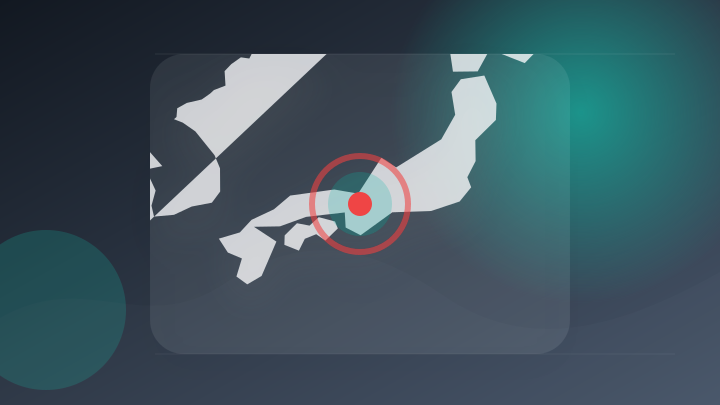

AI
3 topics
豪州、AI規制法制化へ 著作権保護など柱 首相「事実上の窃盗」 [AIの時代] - 朝日新聞
豪州、AI規制法制化へ 著作権保護など柱 首相「事実上の窃盗」 [AIの時代] 朝日新聞
- 注目ポイント
- 規制・AI｜出典: 朝日新聞
- 見るべきポイント
- 対象になる人、決定済みか検討中か、施行日・申請期限を確認。
ニュース STOP、ビジネス向け動画生成AIプラットフォーム「OrionNaut」のβ版 - 株式会社インプレス
ニュース STOP、ビジネス向け動画生成AIプラットフォーム「OrionNaut」のβ版 株式会社インプレス
- 注目ポイント
- 生成AI｜出典: 株式会社インプレス
- 見るべきポイント
- 誰に影響するか、いつから変わるか、報道元が示す具体的な根拠を確認。
エヌビディアCEO､｢ジャパンAI｣の幕開けを予告－神田の居酒屋も訪問（Bloomberg） - Yahoo!ニュース
エヌビディアCEO､｢ジャパンAI｣の幕開けを予告－神田の居酒屋も訪問（Bloomberg） Yahoo!ニュース
- 注目ポイント
- AI｜出典: Yahoo!ニュース
- 見るべきポイント
- 誰に影響するか、いつから変わるか、報道元が示す具体的な根拠を確認。
政治
6 topics
全国82議会から意見書が政府へ：断じて「非核三原則」の堅持を - 公明党
全国82議会から意見書が政府へ：断じて「非核三原則」の堅持を 公明党
- 注目ポイント
- 政府｜出典: 公明党
- 見るべきポイント
- 誰に影響するか、いつから変わるか、報道元が示す具体的な根拠を確認。
読む政治：高市首相、「総意ではない」に反論 皇室典範改正案、論戦の内容 - 毎日新聞
読む政治：高市首相、「総意ではない」に反論 皇室典範改正案、論戦の内容 毎日新聞
- 注目ポイント
- 読む政治・高市首相・「総意ではない」に反論｜出典: 毎日新聞
- 見るべきポイント
- 誰に影響するか、いつから変わるか、報道元が示す具体的な根拠を確認。

皇室典範改正、麻生太郎氏の妹信子さまも養親の対象「政治的思惑を排除できるのか」 問われた政府側は - 東京新聞デジタル
皇室典範改正、麻生太郎氏の妹信子さまも養親の対象「政治的思惑を排除できるのか」 問われた政府側は 東京新聞デジタル
- 注目ポイント
- 政府｜出典: 東京新聞デジタル
- 見るべきポイント
- 誰に影響するか、いつから変わるか、報道元が示す具体的な根拠を確認。
どうなる？静岡県内の最低賃金上昇幅 改定議論スタート 政治関与の動向も注目点 - 静岡新聞DIGITAL
どうなる？静岡県内の最低賃金上昇幅 改定議論スタート 政治関与の動向も注目点 静岡新聞DIGITAL
- 注目ポイント
- どうなる？静岡県内の最低賃金上昇幅・改定議論スタート・政治関与の動向も注目点｜出典: 静岡新聞DIGITAL
- 見るべきポイント
- 誰に影響するか、いつから変わるか、報道元が示す具体的な根拠を確認。
【高市総理×参政・神谷宗幣代表】「政治家もしっかり国民の知る権利にこたえて」消費税減税や皇室典範など重要法案残る中で…党首討論で交わされた論戦【全文掲載】 - TBS NEWS DIG
【高市総理×参政・神谷宗幣代表】「政治家もしっかり国民の知る権利にこたえて」消費税減税や皇室典範など重要法案残る中…
- 注目ポイント
- 法案｜出典: TBS NEWS DIG
- 見るべきポイント
- 対象になる人、決定済みか検討中か、施行日・申請期限を確認。

ブーム再燃「プロフ帳」で長野県の政治を語ってみませんか 信毎オリジナル用紙を作成 - 信濃毎日新聞デジタル
ブーム再燃「プロフ帳」で長野県の政治を語ってみませんか 信毎オリジナル用紙を作成 信濃毎日新聞デジタル
- 注目ポイント
- ブーム再燃「プロフ帳」で長野県の政治を語ってみませんか・信毎オリジナル用紙を作成｜出典: 信濃毎日新聞デジタル
- 見るべきポイント
- 誰に影響するか、いつから変わるか、報道元が示す具体的な根拠を確認。
社会
6 topics
副首都法案が衆議院で可決 「国家社会機能」の継続性確保が目的 中道・参政・共産が反対 国民も修正に応じなかったとして反対に回る - TBS NEWS DIG
副首都法案が衆議院で可決 「国家社会機能」の継続性確保が目的 中道・参政・共産が反対 国民も修正に応じなかったとし…
- 注目ポイント
- 法案｜出典: TBS NEWS DIG
- 見るべきポイント
- 対象になる人、決定済みか検討中か、施行日・申請期限を確認。

動画配信者殺害・多摩川スーツケース死体遺棄事件 女の交際相手の男（41）の上告棄却 懲役15年実刑判決が確定へ 横浜地裁 - Yahoo!ニュース
動画配信者殺害・多摩川スーツケース死体遺棄事件 女の交際相手の男（41）の上告棄却 懲役15年実刑判決が確定へ 横…
- 注目ポイント
- 動画配信者殺害・多摩川スーツケース死体遺棄事件・女の交際相手の男（41）の上告棄却・懲役15年実刑判決が確定へ｜出典: Yahoo!ニュース
- 見るべきポイント
- 発生場所と時刻、警察・消防など公的機関の発表、続報で変わった点を確認。
社会とアートの橋渡し役──ギャラリーの役割とは - bunkamura.co.jp
社会とアートの橋渡し役──ギャラリーの役割とは bunkamura.co.jp
- 注目ポイント
- 社会とアートの橋渡し役──ギャラリーの役割とは｜出典: bunkamura.co.jp
- 見るべきポイント
- 誰に影響するか、いつから変わるか、報道元が示す具体的な根拠を確認。

被害の男性（63）語る「目はもう いっていた」 大分・佐伯市での4人刺傷事件 緊迫した事件当時の様子 野下博司容疑者を殺人未遂容疑視野に捜査 - TBS NEWS DIG
被害の男性（63）語る「目はもう いっていた」 大分・佐伯市での4人刺傷事件 緊迫した事件当時の様子 野下博司容疑…
- 注目ポイント
- 被害の男性（63）語る「目はもう・いっていた」・大分・佐伯市での4人刺傷事件｜出典: TBS NEWS DIG
- 見るべきポイント
- 発生場所と時刻、警察・消防など公的機関の発表、続報で変わった点を確認。

点滴に人間の大便入れて入院患者を殺害か 助産師を逮捕 容疑を否認 [千葉県] - 朝日新聞
点滴に人間の大便入れて入院患者を殺害か 助産師を逮捕 容疑を否認 [千葉県] 朝日新聞
- 注目ポイント
- 逮捕｜出典: 朝日新聞
- 見るべきポイント
- 発生場所と時刻、警察・消防など公的機関の発表、続報で変わった点を確認。
「社会を明るくする運動メッセージ伝達式」が行われました - city-nakatsu.jp
「社会を明るくする運動メッセージ伝達式」が行われました
- 注目ポイント
- 「社会を明るくする運動メッセージ伝達式」が行われました・city｜出典: city-nakatsu.jp
- 見るべきポイント
- 誰に影響するか、いつから変わるか、報道元が示す具体的な根拠を確認。
経済
2 topics
米株と国債が上昇、連日の物価統計下振れで利上げ先送り観測 - Bloomberg.com
米株と国債が上昇、連日の物価統計下振れで利上げ先送り観測 Bloomberg.com
- 注目ポイント
- 利上げ｜出典: Bloomberg.com
- 見るべきポイント
- 誰に影響するか、いつから変わるか、報道元が示す具体的な根拠を確認。
米ビッグテック決算控え半導体株、高値論争の試金石に - BigGo ファイナンス
米ビッグテック決算控え半導体株、高値論争の試金石に BigGo ファイナンス
- 注目ポイント
- 決算｜出典: BigGo ファイナンス
- 見るべきポイント
- 対象期間、金額・変化率、前回との比較、生活や市場への影響を確認。
国際
2 topics

アート・デザイン・クラフトが交わる国際展「Kyōto YouMe Triennale」が10月初開催。京都・東本願寺で - Tokyo Art Beat
アート・デザイン・クラフトが交わる国際展「Kyōto YouMe Triennale」が10月初開催。京都・東本願…
- 注目ポイント
- アート・デザイン・クラフトが交わる国際展「Kyōto・YouMe・Triennale」が10月初開催。京都・東本願寺で｜出典: Tokyo Art Beat
- 見るべきポイント
- 誰に影響するか、いつから変わるか、報道元が示す具体的な根拠を確認。
GLAY・TERUさん 函館の国際芸術祭、28年開催へ調整 「音楽と飲食の担当を」 - 北海道新聞デジタル
GLAY・TERUさん 函館の国際芸術祭、28年開催へ調整 「音楽と飲食の担当を」 北海道新聞デジタル
- 注目ポイント
- GLAY・TERUさん・函館の国際芸術祭・28年開催へ調整｜出典: 北海道新聞デジタル
- 見るべきポイント
- 誰に影響するか、いつから変わるか、報道元が示す具体的な根拠を確認。
エンタメ
2 topics
「真佑のことおいてかないで」乃木坂46・田村の“甘さと辛さの緩急”が暴露され…！？『乃木坂工事延長中』#571 - Lemino
「真佑のことおいてかないで」乃木坂46・田村の“甘さと辛さの緩急”が暴露され…！？『乃木坂工事延長中』#571 L…
- 注目ポイント
- 「真佑のことおいてかないで」乃木坂46・田村の“甘さと辛さの緩急”が暴露され…！？『乃木坂工事延長中』#571｜出典: Lemino
- 見るべきポイント
- 誰に影響するか、いつから変わるか、報道元が示す具体的な根拠を確認。
マキタスポーツとタブレット純、音楽と笑いのエンタメショー開催 - ナタリー
マキタスポーツとタブレット純、音楽と笑いのエンタメショー開催 ナタリー
- 注目ポイント
- マキタスポーツとタブレット純・音楽と笑いのエンタメショー開催｜出典: ナタリー
- 見るべきポイント
- 誰に影響するか、いつから変わるか、報道元が示す具体的な根拠を確認。